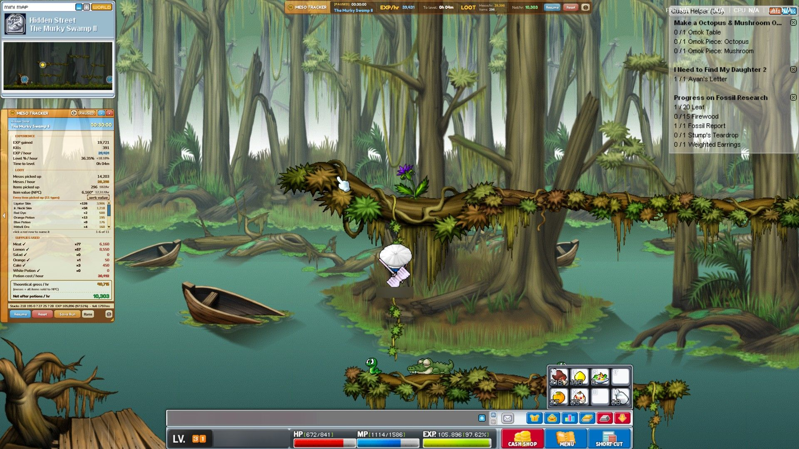
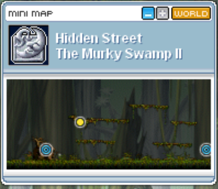
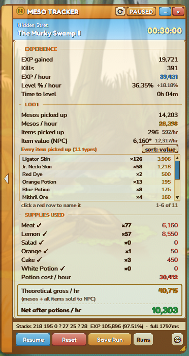

Overlay setup guide
1. Quick start
- Install and log in. Use the email and licence key from your purchase or free-trial email. Your trial days start the first time you log in.
- Start MapleStory Classic at one of the supported window sizes.
- Expand your minimap (click the + on it) so the map name shows in its blue header. See how it should look.
- Keep the pickup feed, the EXP number and your quickslots visible, and keep other windows off the game. Details below.
- Farm. The overlay starts tracking straight away. When you reach your spot, press Reset twice for a clean run. Press Pause for breaks (it also pauses itself when idle).
Good to know: Meso Tracker only reads pixels from your screen. It never reads the game’s memory or files and never sends any input, so you keep playing exactly as normal.
2. Set up the game
The overlay reads what the game draws on screen. These are the things it needs to be able to see.

- Window mode: windowed or fullscreen both work. If you change size or switch between them while the overlay runs, it notices within about a second and re-adjusts by itself.
- Pickup feed (right side of the game screen): mesos, EXP and item pickups are read from the fading lines the game prints there. Keep that area clear of other windows and don’t cover it with other programs.
- EXP number: keep the status bar along the bottom visible, with the EXP number and percentage showing (for example EXP. 16,756 [13.65%]). It is used for EXP/hr and time to level.
- Quickslots (supplies used): the overlay watches the stack counts in your quickslots and counts a use whenever a stack goes down. It reads two rows by default; if your hotbar has a third row, choose 3 rows under Settings › Gameplay › Quickslot rows. It works whatever keys you have bound. Put your potions and food in the slots and keep the quickslot bar on screen. Slots holding skills, or empty slots, are simply ignored.
- Keep the game visible: the game window can’t be minimised, and other windows shouldn’t sit on top of the minimap, feed, quickslots or EXP bar. The overlay itself is hidden from screen capture by default, so it never gets in its own way (see Display settings).
- Window size, not monitor size: the sizes below mean the size of the game’s window (its client area), not your monitor. If a size is not on the list, set the game to one that is.
3. Supported resolutions
| Game window size | Status | Notes |
|---|---|---|
| 1366 × 768 | Best tested | The size most of our testing was done at, including long live sessions. |
| 1920 × 1080 | Supported | Tested on recorded sessions and live checks. Item, EXP and quickslot reading all work. |
| 2560 × 1440 | Supported | Tested on recorded sessions; it has had less live testing than the two above. |
| Anything else | Not supported | The overlay will still start, but item reading falls back to an older method and can be badly wrong. Use one of the sizes above. |
More sizes will be added over time; each release lists what changed. If you need a size that isn’t here, email support@mesotracker.pro and tell us which.
4. The minimap (needed for map detection)
The overlay finds your current map by reading the header of the minimap: the blue strip that shows the area (for example Hidden Street) and the map name (for example The Murky Swamp II). That header only appears when the minimap is expanded. If the minimap is collapsed to a small icon, there is no map name on screen to read.

- Click the + on the minimap until the header with the map name is showing. (The − next to it collapses it again, so leave the minimap expanded.)
- The minimap can sit anywhere on screen and you can drag it around; the overlay finds it by its look, not its position.
- Don’t let another window or the game’s own panels cover the header.
- When the map changes, the new name shows up in about two seconds. If it ever looks stale, click the ⟳ button on the overlay to re-read it.
- If the overlay can’t find the minimap at all, it says “Minimap closed? Click its + to expand it”. If it finds it but doesn’t recognise the name (an event map, for example) it says “Map name undetected, please refresh”.
Why it matters: the map name tells the overlay which monsters and drops to show in the Monsters panel, and it labels your saved runs so you can compare maps later.
5. Item detection accuracy
Items, mesos and EXP are read from the pickup feed the moment a line appears. In our own test sessions:
- At 1366 × 768: in a 17-minute test run the overlay counted 443 of 449 pickup lines (98.7%), and an independent hand count of one session matched 96 of 97 lines with no wrong values. Item names read correctly 60 times out of 66, with 0 wrong: when it isn’t sure it shows an “Unrecognised” row instead of guessing (see troubleshooting).
- At 1920 × 1080 and 2560 × 1440: our recorded test sessions counted every line we checked (17 of 17 and 30 of 30), but those samples are smaller, so treat them as a good sign rather than a guarantee.
Honest note: these figures come from our own test recordings, not from every possible game scene. Heavy scenery behind the feed, a very busy screen, or a covered feed area can lower accuracy. Item values use NPC sell prices, so they are an estimate of what an item is worth, not what you’ll get on the market.
6. The overlay window
The overlay is a small always-on-top window that docks to the bottom-right of the monitor the game is on. Clicking it never steals keyboard focus from the game. Here is what each part does.

Example screenshot of the overlay after a 30-minute session.
- Status and buttons
- The pill shows Tracking or Paused; click it to toggle. ⟳ re-reads the map name. − / + collapses the panel to its bar and brings it back. × closes the app.
- Map and clock
- The area and map name from your minimap, and the run timer. The timer only counts while tracking is on.
- Experience
- EXP gained, kills, EXP per hour, level percentage gained per hour, and the estimated time to your next level at the current pace.
- Loot
- Mesos picked up and per hour, items picked up, and their total value at the prices you chose under Items counted at (see Settings › Gameplay). The list underneath shows every item with its quantity and value. The sort button cycles the list through newest, value, quantity and A-Z; scroll it with the mouse wheel or the arrows. A red Unrecognised row is a line the app wasn’t sure about: click it to name the item yourself, and the correction is applied to this run straight away.
- Supplies used
- Each potion or food you used, how many, and what they cost. Potion cost / hour adds them up. Cost is the NPC shop price or market price, whichever you chose in Settings › Gameplay.
- Net after potions
- Theoretical gross / hr is your mesos plus everything sold to an NPC. Net after potions / hr subtracts your supply costs. It is the number to compare maps by.
- Stacks line
- A small diagnostic: the stack counts it can currently read in your quickslots (a ? means nothing was read there), your EXP value, and how long its last full reading took. It is useful when asking for support.
- Buttons
- Pause / Resume stops and restarts counting. Reset needs a second click within three seconds, then starts a fresh run, and everything on screen at that moment is ignored. Save Run writes the run to a file. Runs opens the folder of saved runs. The gear opens Settings.
- Moving and resizing
- Drag the title bar to move the overlay. Drag the bottom-right corner to show more or less of the panel. The small arrow tab on the edge opens and closes the Monsters panel, which lists the monsters on your map and what they drop, with the chance of each drop and what it sells for. Items you have already picked up this run get a green tick.
- Auto-pause
- After a minute with no EXP, mesos, items or potions, the overlay pauses itself so breaks don’t drag your rates down, and resumes the moment play starts again. It never overrides a pause you clicked yourself. You can change the delay in Settings.
7. Every setting explained
Open Settings with the gear button on the overlay. Click Apply to save, or Close to leave without applying.
Account
| Setting | What it does |
|---|---|
| Email, Subscription, Trial ends / Renews, Version | Shows who is logged in, whether your subscription or free trial is active, when it ends or renews, and the app version. |
| Subscribe / Manage subscription | Opens the plans page during a free trial, or your billing page once you subscribe, in your browser. |
| Deactivate this device | Frees your licence so you can log in on another PC. The app closes afterwards. |
| Help improve Meso Tracker | Optional and off by default. If you turn it on, the app can send a small picture of a few rows of pickup text that it couldn’t read, so the readers can improve. It never sends screenshots, chat, your character name or your account. You can turn it off or delete what you sent at any time. See the privacy policy. |
Gameplay
| Setting | What it does |
|---|---|
| Potion cost counted as | NPC shop price values each used potion at what the shop sells it for. Market price uses the going market price. |
| Items counted at | Which price each picked-up item is valued at. Highest (the default) uses the larger of the vendor price and the market price. Vendor uses the shop sell price only. Market uses the market price, and falls back to the vendor price when an item has no market price. Market prices are what players ask, not guaranteed sales. |
| Fetch current market prices from the Meso Tracker server | On by default. The app gets a shared market price list when it starts and refreshes it every hour. Update market prices now fetches it straight away. |
| Quickslot rows | 2 rows (the default) or 3 rows. Choose 3 if your hotbar has a third row on top of the two the overlay always reads, so those slots are counted too. Your key bindings don’t matter. |
| Reload prices | Re-reads the price list the app is using. The line above it shows which list and when it was generated. |
Display
| Setting | What it does |
|---|---|
| Theme | The overlay’s colour scheme: Day, Night, Slime or Pink Bean. Applies the next time you start the app. |
| Monsters panel side | Which side the Monsters panel opens on when both are free. It normally opens on whichever side has room. |
| Opacity | How see-through the overlay is, from 50% to 100%. |
| Item list rows | How many items the Loot list shows at once (3 to 20). |
| Auto-pause after idle | Seconds of nothing before the overlay pauses itself. Set 0 to turn auto-pause off. |
| Hide the overlay from screen recordings | On by default. It keeps the overlay out of recordings and streams, and out of the picture the app reads. Turn it off only if you want to record or stream the overlay itself (for a demo video, say), and turn it back on afterwards. |
| Level-up | Shows a celebration screen when you level. Preview shows it once. |
| Bar | Pick which rates appear in the bar right under the map: Net / hr, Gross / hr, EXP / hr, Mesos / hr, Items / hr, Potion cost / hr and Kills / hr. |
Panel
Tick exactly which rows the full panel shows: EXP gained, Kills, EXP / hour, Level % / hour, Time to level, Mesos picked up, Mesos / hour, Items picked up, Item value, the item list, per-item supply lines, Potion cost / hour, Theoretical gross / hr, and Net after potions / hr. Unticked rows take no space, and a section heading disappears if everything under it is off.
Top bar
An optional wide strip you can place anywhere on screen, for when you want your numbers visible without the full panel.
| Setting | What it does |
|---|---|
| Show the wide top bar | Turns the strip on or off. It is off by default. |
| Where | Top centre, top left or top right of the game, or Free to put it wherever you drag it. Dragging it by an empty part switches this to Free. |
| What’s on it | A list of everything it can show: the title, status, EXP and loot blocks, individual rates and totals, the clock, the map name, and the Pause, Reset and Settings buttons. Tick to show, and use Up and Down to change the order, left to right. Reset to default restores the standard layout. |
8. Saving and comparing runs
- Press Save Run when you finish a spot. It saves the map, the times and every total to a file, and adds a row to a summary sheet.
- Press Runs to open the folder. You can open the summary in a spreadsheet to compare maps side by side.
- The overlay also autosaves when you close it.
- For a fair comparison between two maps, run each for the same length of time with the same supplies, and remember drops are luck: a single 30-minute run can swing a lot.
9. Troubleshooting
The overlay says “MapleStory not found” or “game minimised”
Start the game, and keep its window open on screen. A minimised game can’t be read.
“Minimap closed? Click its + to expand it”
The minimap is collapsed or hidden. Click the + on it so the header with the map name shows, and make sure nothing is covering it. See the example.
“Map name undetected, please refresh”
- Click ⟳ on the overlay to re-read the map.
- Check the minimap header is fully visible and not overlapped.
- Some event or special maps aren’t in the map list. Your numbers still count; only the map name and Monsters panel are affected.
Mesos, EXP or items aren’t counting
- Check the overlay isn’t Paused. The status pill and the Pause / Resume button show it. It may have auto-paused after being idle.
- Make sure the game window is one of the supported sizes.
- Keep the pickup feed area on the right of the game screen clear. Another window over it blocks the reading.
- Check “Hide the overlay from screen recordings” is still ticked in Settings › Display.
- If you just changed size or went between windowed and fullscreen and it didn’t settle after a few seconds, restart the app.
EXP or time to level looks stuck
The EXP number and percentage on the game’s bottom status bar must be visible and not covered. Time to level also needs a little time at the current pace before it shows.
An item shows as “Unrecognised”
The app preferred to flag a name it wasn’t sure about rather than guess. Click the red row and pick or type the right name. Its quantity is already counted.
Supplies used shows nothing, or the Stacks line has ?
- The quickslot bar has to be on screen with your potions or food in it.
- If your hotbar has three rows and the top row isn’t counted, set Quickslot rows to 3 in Settings › Gameplay.
- A ? means nothing was read in that slot. That’s normal for empty slots or slots holding skills.
- Costs show “?” when an item has no known shop or market price yet.
I can’t see the overlay
It docks to the bottom-right of the monitor the game is on. If it is collapsed to its bar, click + to bring the panel back. If you dragged it somewhere you can’t find, close and reopen the app, or use the top bar (Settings › Top bar) as a second place to see your numbers.
My recording or stream doesn’t show the overlay
That is deliberate. Turn off “Hide the overlay from screen recordings” in Settings › Display for the recording, then turn it back on.
Windows blocked the installer
See Support for SmartScreen and Smart App Control steps. The Microsoft Store version avoids both.
Still stuck?
Email support@mesotracker.pro from the address you signed up with. Please include your app version (Settings › Account), your game window size, and a screenshot of the overlay with the Stacks line showing. Blur your character name and other players’ names and chat before sending.
10. Account, trial and moving PC
- Free trial: 5 days, no card. Your days start the first time you log in with the key we emailed. When the trial ends the app stops until you subscribe, and subscribing with the same email keeps the same key.
- One PC at a time: a licence works on one device at a time. Use Deactivate this device in Settings › Account, or accept the prompt on a new PC.
- Updates: the app tells you when a new version is out. The Store version updates through the Microsoft Store.
- Billing and cancelling: see Refunds & Cancellation.